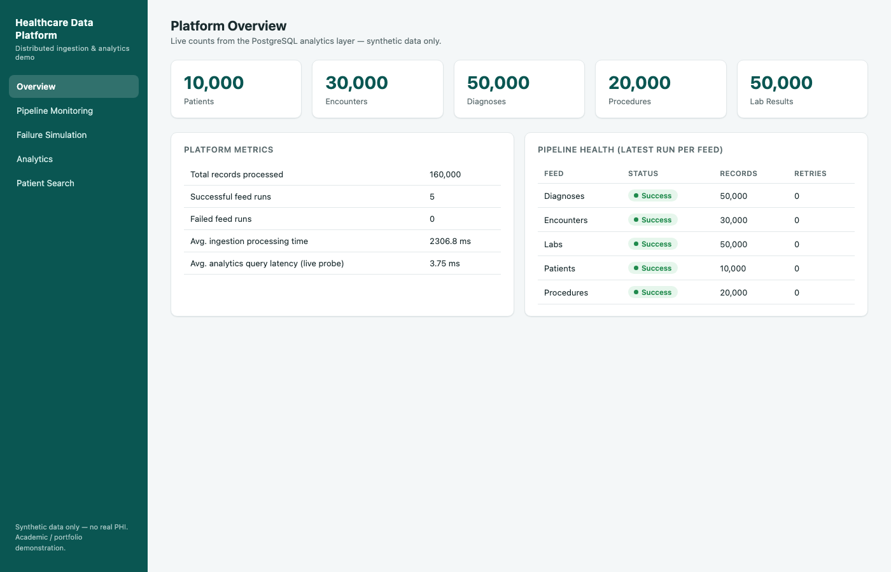
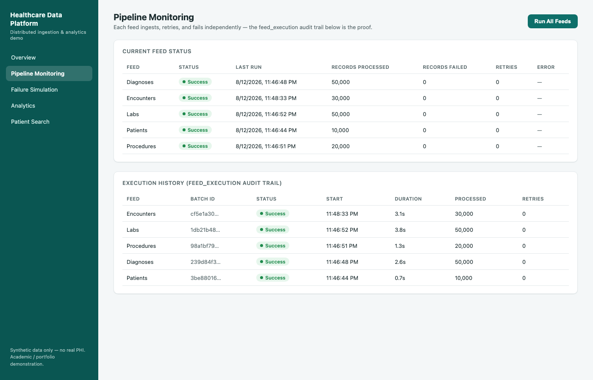
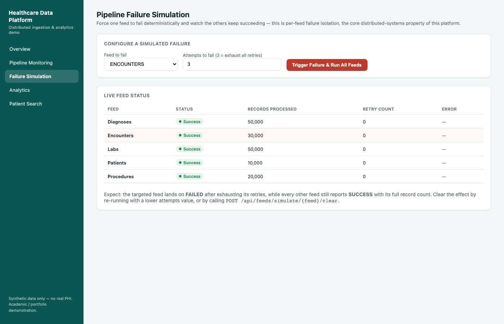
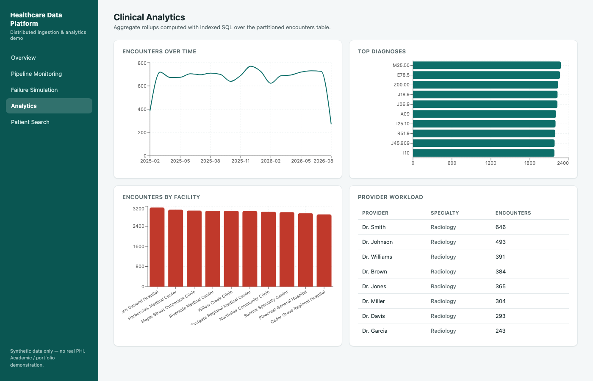
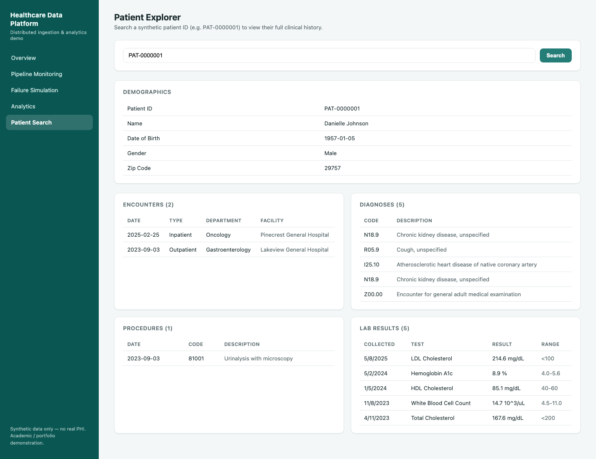

Five independent healthcare feeds, each with its own retry policy and failure isolation, landing in a partitioned, indexed PostgreSQL analytics layer, served through a Spring Boot REST API and a React dashboard. No Docker, no cloud subscription, no real patient data.
Healthcare systems receive data from many independent upstream sources — registration, encounters, diagnoses, procedures, lab systems — each on its own schedule, each capable of failing on its own. A naive ingestion job that processes all feeds in one transaction turns a single bad file into a platform-wide outage. This project demonstrates the alternative: per-feed failure isolation — an architecture where a failure in the Encounters feed is fully contained, while Patients, Diagnoses, Procedures, and Labs keep succeeding.
Azure Data Factory and Azure Blob Storage are represented as the production target architecture (design artifacts, not deployed). The local implementation reproduces the same retry + isolation behavior with a Java ingestion engine and the local filesystem.
Captured directly from the running platform: the Encounters feed was forced to fail through
3 retry attempts (exponential backoff, 2s → 4s), then marked FAILED — while every
other feed in the same batch run still completed with SUCCESS and its full record count.
This exact scenario is asserted in backend/src/test/java/.../ingestion/FeedIsolationTest.java
and again against a real PostgreSQL database in IngestionIntegrationTest.
analytics.encounters is partitioned by encounter_date (yearly range
partitions); encounters, diagnoses, and labs carry indexes
matched to the queries the API actually runs. Each query below was run against an unpartitioned,
minimally-indexed baseline table loaded with the identical rows, and against the real optimized
table — median of 7 runs each, via EXPLAIN ANALYZE.
| Query | Baseline (median) | Optimized (median) | Improvement |
|---|---|---|---|
| Patient encounter history (indexed point lookup) | 2.443 ms | 0.105 ms | 95.7% |
| Encounters by facility, date-range filtered (partition pruning) | 4.151 ms | 2.835 ms | 31.7% |
| Diagnoses by patient (indexed lookup) | 4.820 ms | 0.099 ms | 97.9% |
Average across the 3 queries: 75.1% measured improvement (an earlier run measured
84.7% on the identical queries — these numbers move between runs at sub-5ms baseline latencies; see
docs/performance.md for why). The two point-lookup queries improve 95%+; the one query
doing real aggregation work lands close to the brief's original ~30% target — a more informative
result than the headline average. Full methodology and raw samples:
reports/performance/results.json.




